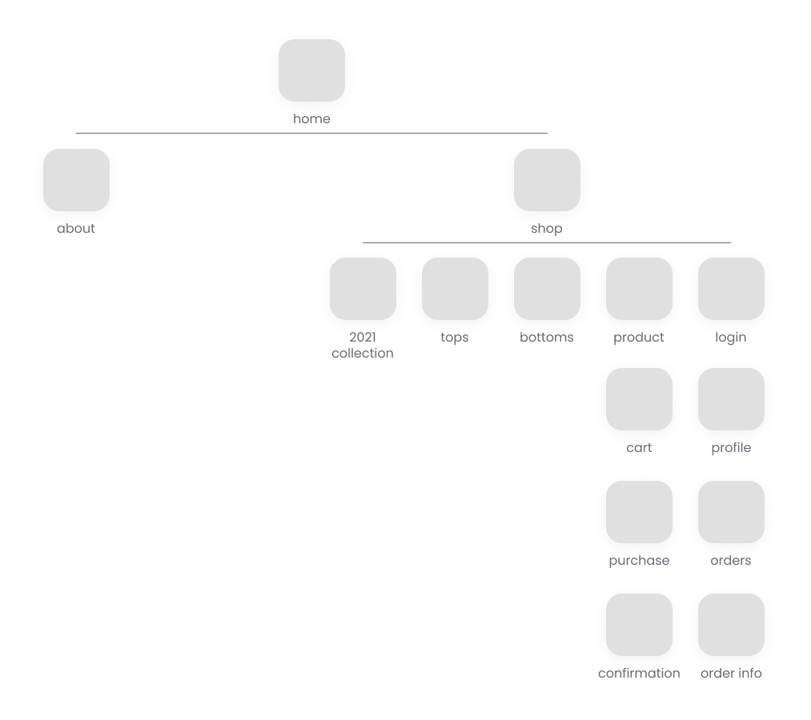

TROUBLE
TROUBLE é uma loja fictícia de roupas que tem como principal característica o estilo alternativo e colorido.


1. Imersão
Pesquisa de Usuário
Uma pesquisa secundária foi feita para melhor entender o comportamento dos consumidores.1
- 45% dos consumidores entrevistados preferem fazer compras em sites com mais avaliações.
- Celulares são a principal plataforma de compras online, com a maioria dos consumidores preferindo um app dedicado ao invés de apenas um site.
- 34% afirmaram que sites complicados e lentos são o aspecto mais frustrante de compras online, para 29% o maior problema é anúncios e pop-ups, e para 9% é falta de informação sobre os produtos.
- Os principais fatores para concretizar uma compra foram preço (89%), seguido da marca (57%), entrega e política de retorno (49%), avaliações (47%), política de estorno (44%), entre outros (14%).
- O fator principal para lealdade dos consumidores online foi a experiência da compra (43%), seguida de preços (36%), marca (19%), e outros (2%).
Necessidades do Usuário
Com base na pesquisa, as principais necessidades do usuáriro foram definidas.
#1 Um site limpo, sem muitos pop-ups e anúncios e que rode bem.
#2 Uma ótima experiência de compra.
#3 Conhecer o tom da marca para desenvolver lealdade.
#4 Descontos e promoções.
#5 Política de entrega, retorno, e estorno clara.
Personas
Para melhor identificar com o usuário,algumas personas foram criadas
Laura, 32
Laura é mãe de duas crianças pequenas e sair com os dois para fazer compras é inviável. Ela prefere olhar roupas e acessórios quando tem alguns minutos no celular. Para ela é importante poder salvar roupas que gosta para olhar e comprar depois.

Denise, 19
Denise adora fazer compras online e está sempre pesquisando por marcas novas para conhecer. O maior problema que encontra é receio de que essas marcas novas não sejam de confiança por não ter muita informação disponível.
2. Ideação
Arquitetura da informação
O sitemap foi definido levando em consideração a estrutura de lojas similares e das necessidades do usuário.
Wireframe
O protótipo de baixa fidelidade foi feito pensando nas necessidades do usuário.


3. Definição
Protótipo de Alta Fidelidade
Com tudo definido, o protótipo de alta fidelidade foi criado.